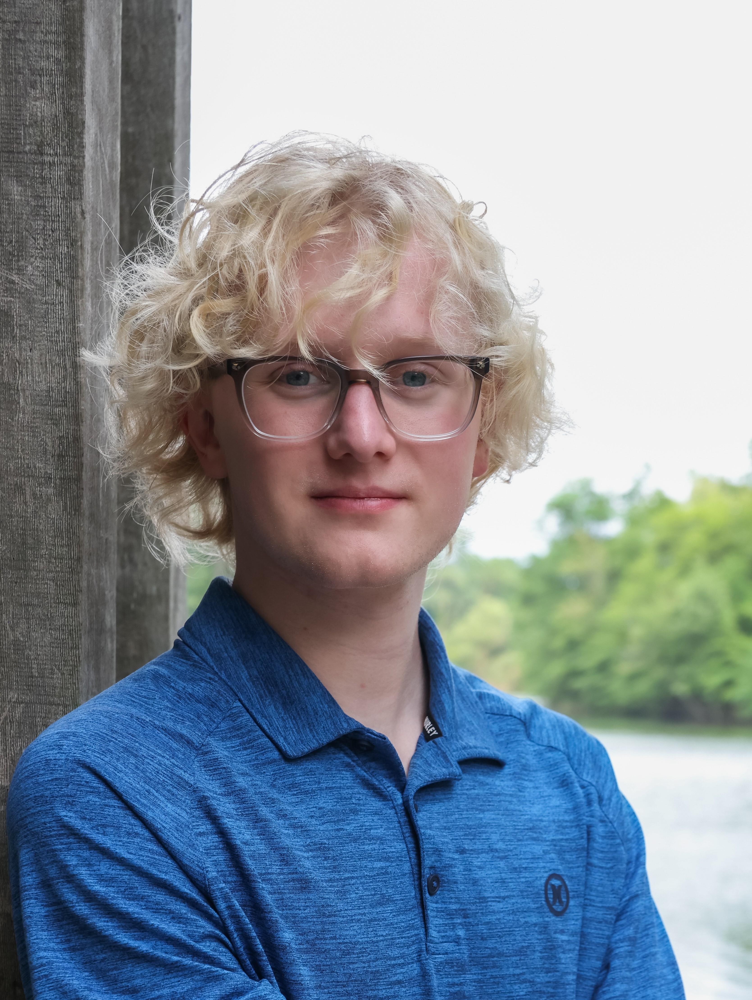

Teague W. Burkey
Engineering Scholars Student @ OSU
Hello and welcome to my website!
I am a Computer Science Engineering student at OSU, involved with OSU Engineering Scholars and OSU's Cyber Security Club.
I have interests in reverse engineering software, digital privacy, software app development, digital networking, teaching, and more.
Who Am I?
I'm Teague Burkey, a Computer Science Engineering student at the Ohio State University. I'm involved with OSU's Cybersecurity Club and am an active participant in OSU's Engineering Scholars program.
What is this Website?
This is a digital portfolio designed to give you an idea of my skillset and interests. It is self-hosted on what was once a desktop PC, given to me by my grandparents and served to the internet using tailscale's reverse-proxy service (tailscale funnel).
Professional Reference
- A Letter of Reccomendation from Professor Taylor at Carnegie Mellon University
- My Enrollment Letter to Carnegie Mellon University's 2025 Pre-College Program.
- My Ohio State University Acceptance Letter
- OSU Engineering Scholars Acceptance Letter